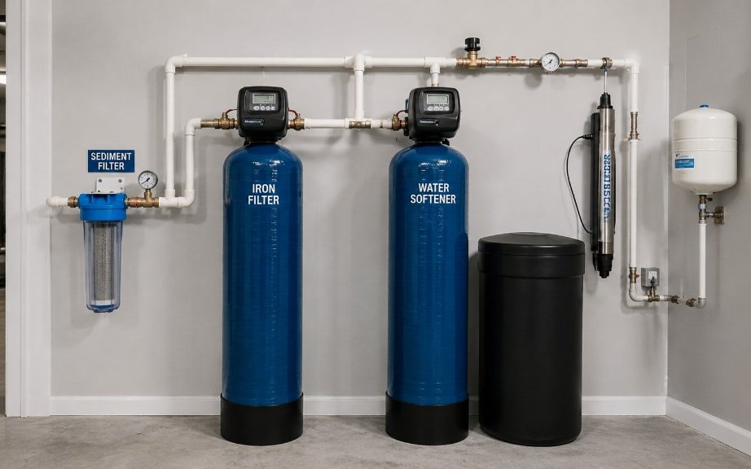

Whole-Home Water Filtration Services
Improve water quality throughout your entire home with filtration systems designed to reduce unwanted contaminants, odors, sediment, and common water concerns from every tap.
Explore serviceCapital Water Co. installs water filtration systems in Brusly, LA for homeowners who want the equipment connected and tested. We handle whole-house water filtration, reverse osmosis, and water softener installation without treating the visit like a retail drop-in.
Smaller town, full install
West Baton Rouge service
Serving Brusly, LA and surrounding communities.
OUR SERVICES • COMPREHENSIVE WATER FILTRATION SOLUTIONS
Explore whole-house water filtration, reverse osmosis, and related treatment we install in Brusly.
Improve water quality throughout your entire home with filtration systems designed to reduce unwanted contaminants, odors, sediment, and common water concerns from every tap.
Explore service
Enjoy cleaner, better-tasting drinking water with advanced reverse osmosis systems that provide high-quality water for drinking, cooking, coffee, ice, and everyday use.
Explore service
Treat private well water concerns such as iron, sulfur odors, sediment, staining, and mineral issues with customized solutions built around your property’s water source.
Explore service
Reduce hard water minerals that can cause buildup on fixtures, dry skin, dull laundry, and strain on plumbing and appliances with a professionally installed water softener system.
Explore service
Improve taste and odor by reducing chlorine, chloramine, and other common water concerns with carbon filtration systems designed for fresher, cleaner water.
Explore service
Improve municipal water quality with treatment systems designed to reduce chlorine taste, odors, sediment, and other common city water concerns found in local homes.
Explore serviceFREQUENTLY ASKED ・ ANSWERS TO YOUR QUESTIONS
Installation questions from Brusly homeowners.
Many residential jobs finish the same day after access is confirmed. Kitchen reverse osmosis is usually shorter.
Yes. A water filtration system only works if someone can service it. We show the housings and the bypass before we leave.
Yes. Those communities are part of the same West Baton Rouge Parish installation coverage.
SERVICE AREA
Capital Water Co. provides water filtration installation in Brusly and nearby west-bank communities including Port Allen and Addis. Request a free consultation to review your home.
Request a free consultation to talk through water filtration installation for your home.